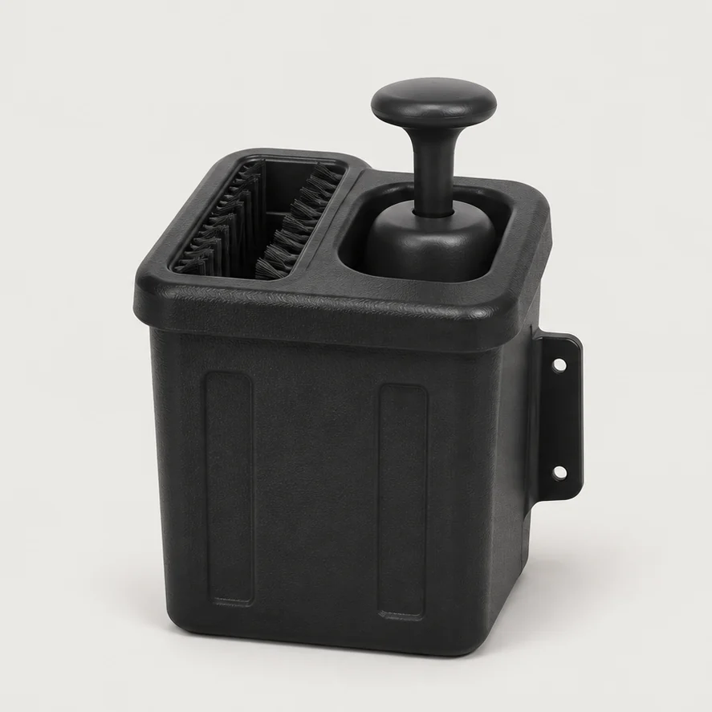

On-course gear
Club & Ball Washer
Part No. GCA-JW131-01-00
$70.99 USD
Separate chambers clean a club face and a golf ball in one unit that rides behind the seat.
Vehicle fitment
Yamaha Drive Fleet · 2013–2016Yamaha Drive2 Fleet · 2017–2020
Check fit detailsRetailer sets final price, availability and shipping.
Will it fit?
| Model | Catalog years |
|---|---|
| Yamaha Drive Fleet | 2013–2016 |
| Yamaha Drive2 Fleet | 2017–2020 |
For the standard fleet bag area. Not compatible with a rear-facing seat. An accessory already on the same side can block the washer bracket.
Installation notes
- Check the rear seat configuration and choose the accessible side of the golf bag area.
- Match the supplied bracket to the attachment points shown in the Yamaha instructions before tightening the hardware.
- With the unit fastened upright, check the plunger travel and clearance around the golf bags.